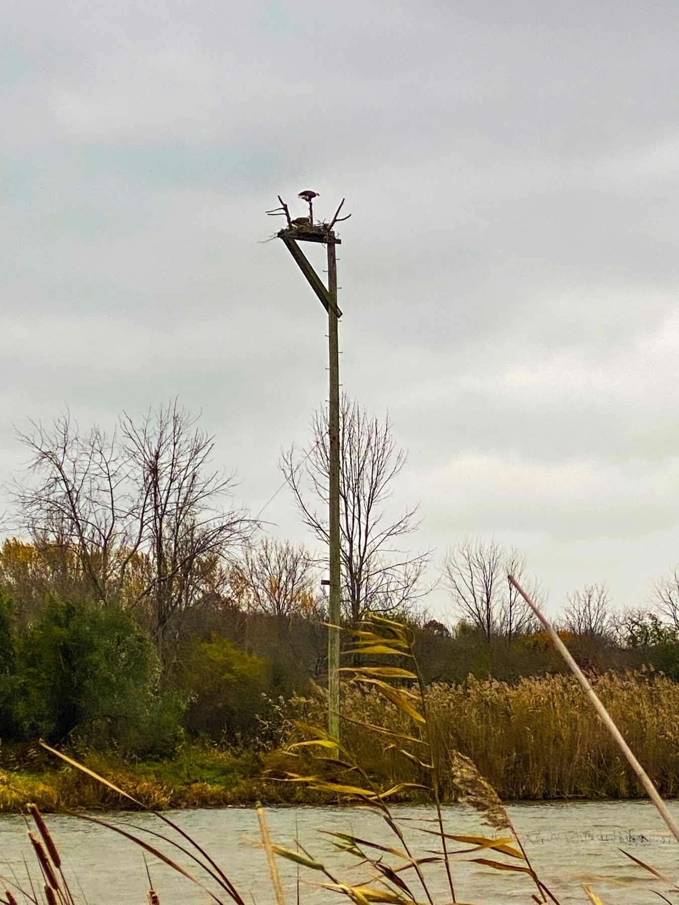

Spectacular Sunrise
The morning sky gave a show with colourful clouds during a sunrise. The flat landscape allows capturing this moment in a full dramatic view.
//
Poranne niebo dało show z kolorowymi chmurami podczas wschodu słońca. Płaski krajobraz pozwala uchwycić ten moment w pełnym dramatcie.

Evening Light
I was standing and admiring the evening light; there were so many colour gradients in the sky.
//
Stałem i podziwiałem wieczorne światło; na niebie było wiele gradientów kolorów.
Look Up, Look Down and Look at the Deer
I got lucky today; I paid attention to what was up and down below during a walk. What I didn’t expect when I turned my head to the left… there was a deer. I think we both were startled by each other’s presence.
//
Miałem dzisiaj szczęście; Podczas spaceru zwracałem uwagę na to, co było na górze i na dole. Czego się nie spodziewałem, kiedy odwróciłem głowę w lewo… był jeleń. Myślę, że oboje byliśmy zaskoczeni swoją obecnością.
Video: Walking and Kicking it Up
Walking in the forest full of leaves on the ground and kicking them up is very satisfying. Now I know why my dogs love jumping into the piles of leaves. Sounds and smells make this activity a lot of fun. There is something child-like about it.
//
Chodzenie po lesie pełnym liści na ziemi i kopanie ich jest bardzo satysfakcjonujące. Teraz już wiem, dlaczego moje psy uwielbiają skakać w sterty liści. Dźwięki i zapachy sprawiają, że ta aktywność to świetna zabawa. Jest w tym coś dziecinnego.
Memories of Fall
Today the estate looks very different, no more green colour anywhere to be found. Everything looks frozen and gray with the temperature outside well below zero. But every time I look at these recent photographs, it brings me warmth and puts a smile on my face. I am already looking forward to when the trees will start turning green again in a few months. The life cycle continues…
//
Dziś nieruchomości wyglądają zupełnie inaczej, nigdzie nie ma zielonego koloru. Wszystko wygląda na zamarznięte i szare, a temperatura na zewnątrz znacznie poniżej zera. Ale za każdym razem, gdy patrzę na te ostatnie zdjęcia, przynosi mi to ciepło i wywołuje uśmiech na mojej twarzy. Już nie mogę się doczekać, kiedy za kilka miesięcy drzewa znów się zazielenią. Cykl życia trwa…


Video: Geese Flying High
Early morning, the sun was just rising and they were flying high… laud as always. I love watching them, they put on display each and every time when they go into different formations. This short video was taken in the conservation area where there are many other birds.
//
Wczesnym rankiem właśnie wschodziło słońce, a one lecieły wysoko… jak zwykle głośne. Uwielbiam je oglądać, wystawiają się na pokaz za każdym razem, gdy wchodzą w różne formacje. Ten krótki film został nakręcony w obszarze chronionym, gdzie mieszka wiele innych ptaków.
Golden Hour
Early morning sunrise makes you want to sit on the beach and stare at the sky.
//
Wczesny poranny wschód słońca sprawia, że masz ochotę usiąść na plaży i wpatrywać się w niebo.


Sand Dunes
The area of the protected sand dune is really nice even on cool, autumn days. The sky was beautiful as well.
//
Teren chronionych wydm jest naprawdę ładny nawet w chłodne, jesienne dni. Niebo też było piękne.


Fungi
There is a beauty in fungi that grow on the living and deadwood. This one was quite large, looking like a building with terraces.
//
Jest piękno w grzybach, które rosną na żywym i martwym drewnie. Ten był dość duży, wyglądał jak budynek z tarasami.
Stunning Sunrise
When you wake up and look outside of the window, sometimes the view leaves you speechless.
//
Kiedy budzisz się i wyglądasz przez okno, czasami widok zapiera dech w piersiach.
Calm Lake
I have never seen this lake so still; what a beautiful evening to admire it.
//
Nigdy nie widziałem tego jeziora tak nieruchomo, jaki piękny wieczór, aby go tylko podziwiać.
Conservation Area
This conservation area has 130 hectares. It is famous for its Lotus ponds and includes farmland, forests, wetlands, and prairie. It’s still wonderful during the autumn months, even if the weather may not be.
//
Ten obszar chroniony ma 130 hektarów. Słynie ze stawów lotosowych i obejmuje pola uprawne, lasy, tereny podmokłe i prerie. Teraz w miesiącach jesiennych nadal jest bardzo pięknie, nawet jeśli pogoda może nie być taka.

Late November Snow
It snowed last night for the first time this month. It wasn’t too cold, and there wasn’t any wind; everything was standing still with just a dusting of white power.
//
Wczoraj w nocy po raz pierwszy w tym miesiącu spadł śnieg. Nie było za zimno i nie było wiatru, wszystko stało w miejscu, tylko drobinka białego śniegu.